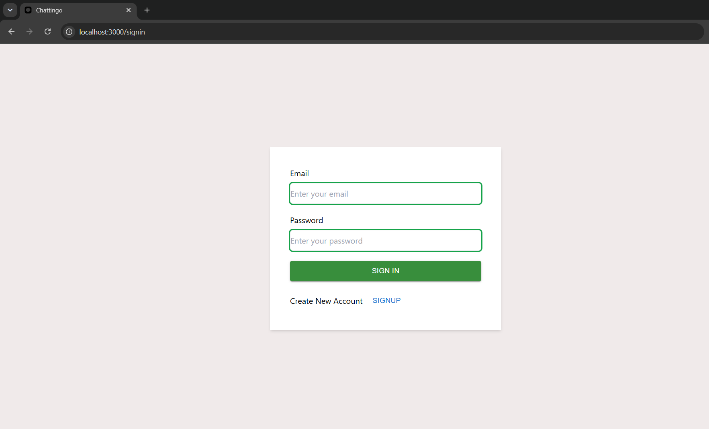
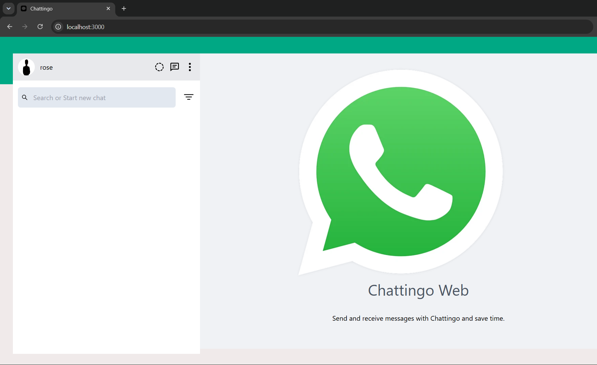
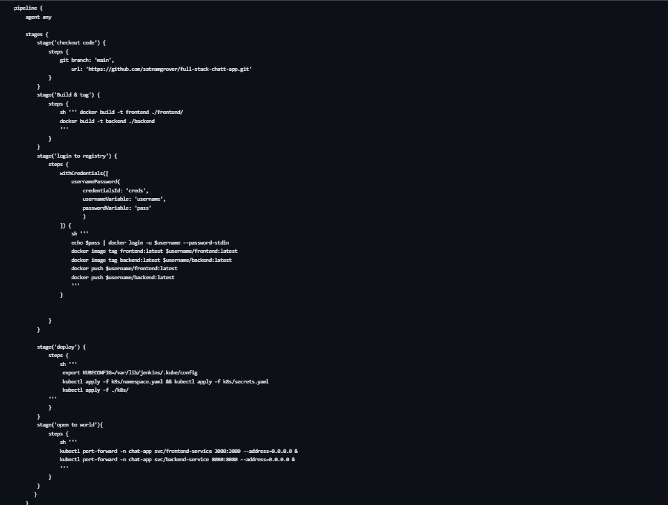
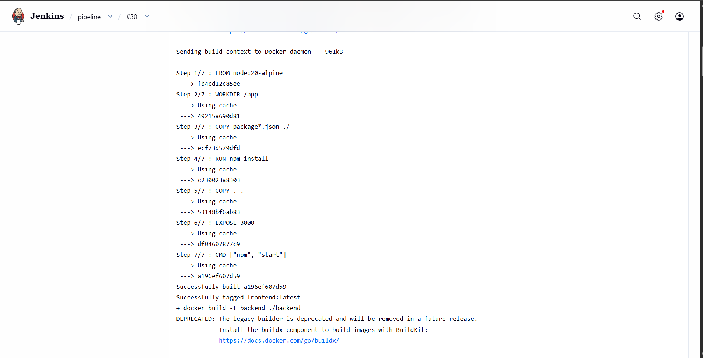

PROJECT 02 · KUBERNETES DEPLOYMENT
Deployed Full Stack Chat Application
A full-stack chat application deployed on Kubernetes with separate frontend and backend Deployments, a database StatefulSet, persistent storage, and automated deployment using Jenkins.

PROJECT OVERVIEW
Breaking a full-stack application into Kubernetes workloads.
The application was deployed on Kubernetes using separate frontend and backend Deployments. The database was handled with a StatefulSet and persistent storage through a PersistentVolume and PersistentVolumeClaim.
Docker was used to containerize application components, while Jenkins was used to automate deployment steps. Kubernetes Services were configured to provide network access and the project included troubleshooting of containerized workloads.
ARCHITECTURE
Application Workflow
Frontend
Separate Kubernetes Deployment for the frontend.
Backend
Backend runs as its own Kubernetes workload.
Database
StatefulSet with persistent storage.
Services
Services expose the application workloads.
Jenkins
Automated deployment steps with CI/CD tooling.
REAL PROJECT SCREENSHOTS
Replace these with your actual pictures.
The architecture thumbnail remains fixed. The gallery is arranged for your live application, Kubernetes deployment, Jenkins pipeline and container screenshots.




SKILLS DEMONSTRATED
What this project shows.
Multi-component application deployment with Kubernetes.
Docker containerization of application components.
StatefulSet, PersistentVolume and PersistentVolumeClaim usage.
Kubernetes Services and container troubleshooting.
Jenkins-based deployment automation.
Next project.
Python Application Deployment on AWS EKS →